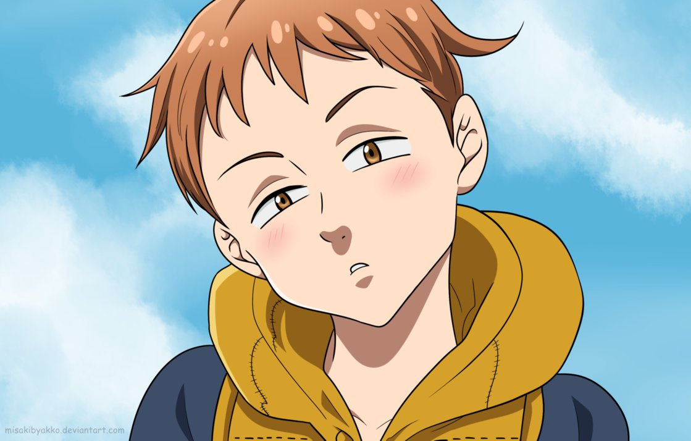

Ao serem acusados de tentar tomar o trono, os temidos guerreiros chamados de
“Os Sete Pecados Mortais” foram exilados e desapareceram no mundo. Anos depois, a Princesa Elizabeth acaba
descobrindo a verdade: os Cavaleiros Sagrados, a guarda do Rei, armaram para incriminar os Pecados!
Entretanto, era tarde demais para prevenir que esses cavaleiros matassem seu pai e começassem a almejar o
trono. Agora a Princesa está em fulga, buscando pelos Sete Pecados Mortais para ajudá-la a retomar o reino.
Mas o primeiro Pecado que ela conhece, Meliodas, é um tampinha dono de um bar que tem um porco falante.
Ele sequer tem uma espada de verdade! Será que a lenda da força dos Sete Pecados Mortais não passou de um exagero?
Meliodas - O Pecado da Ira
O capitão dos Sete (7) Pecados Capitais. O pecado da Ira do Dragão, Protagonista do anime.
Apesar de parecer uma criança, ele é extremamente poderoso e muito mais velho do que parece,
já que ele tem mais de 3000 anos. Mesmo sendo conhecido como pecado da Ira, ele raramente fica bravo e
é muito brincalhão, pervertido, confiante e gentil com aqueles com que se importa.
Acredita-se que ele fez parte do Clã dos Demônios.
Ban - O Pecado da Ganância
O pecado capital da Ganância da Raposa. Também conhecido como Ban, o Imortal.
Ele é agressivo em suas lutas, porém descontraído fora delas, além de ser um exímio cozinheiro
e aparentar se preocupar apenas com Meliodas e os outros pecados acima de seus próprios interesses,
com exceção da sua amada Elaine –Irmã de King –, por quem ele faria qualquer coisa para tê-la em seus braços.
Apesar de ser o pecado da ganância, ele tem um coração profundamente carinhoso e teme perder aqueles
com quem se importa.
Diane - O Pecado da Inveja
O pecado ca pital da inveja da Serpente. Faz parte do clã de gigantes, possui um enorme poder físico
e uma conexão profunda com a terra. Diane é protetora, faz qualquer coisa para proteger uma vida inocente.
Ela se torna a melhor amiga de Elizabeth, mas sente inveja da afeição do Capitão por Elizabeth em vez dela.
Porém acaba descobrindo uma antiga paixão.
Harlekin - O Pegado da Preguiça
O pecado capital da Preguiça do Urso. Seu verdadeiro nome é Harlequin e ele é o Rei das Fadas
e protetor da Floresta das Fadas e da Fonte da Juventude em seu interior. King, assim como Meliodas,
aparenta ser uma criança, porém esta é uma característica das fadas e não se sabe ao certo mas,
as fadas assim como King, podem se transformar instantaneamente em um "humano mais adulto".
Ele é "secretamente" apaixonado por Diane.

Merlin - O Pecado da Gula
O pecado capital da Gula do Javali, a maior feiticeira em toda a Britânia. Merlin aparenta ter um caráter lúdico.
Ela gosta de zombar e de desafiar os outros e se mostra bastante sábia em suas palavras.
Gowther - O Pecado da Lúxuria
O pecado capital da Luxúria da Cabra. Não se sabe ao certo as origens de Gowther, mas ele é incapaz de ter
sentimentos ou emoções, além de não entender muito sobre interações sociais, mas faz o seu melhor para tentar
entendê-las, passando muito de seu tempo com leituras. Ele é conhecido por afirmar fatos observados ou
óbvios sem considerar os sentimentos dos outros.
Escanor - O Pecado do Orgulho
O pecado capital do Orgulho do Leão. Sua força e personalidade variam de acordo com a hora do dia,
com o seu poder sendo imenso e sua personalidade arrogante durante o dia, mas se tornando frágil e submisso
a noite. Há rumores de que ele é tido como o pecado mais forte, isso sendo reconhecido até mesmo pelo
próprio Meliodas no decorrer dos mangás. Ele demonstra ter sentimentos por Merlin.